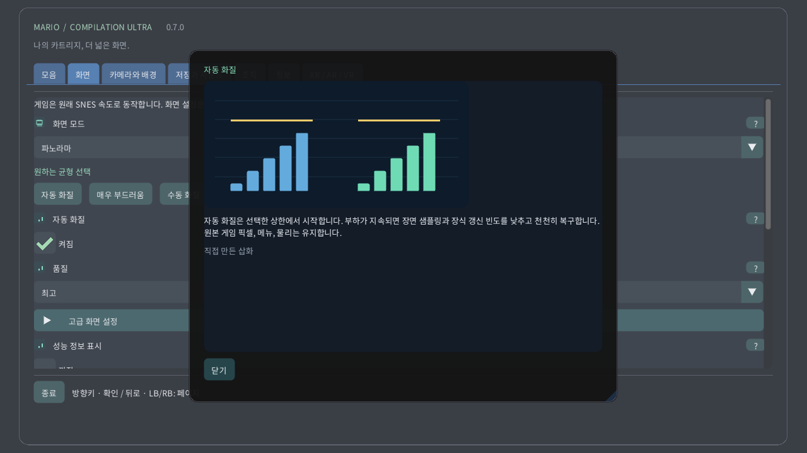

로컬 카트리지를 선택해 게임을 시작하거나 안내서를 여세요. 공개 다운로드에는 게임이나 개인 저장 데이터가 포함되지 않습니다.
원본 보기는 콘솔 화면을 유지하고 파노라마는 이를 확장합니다. 아틀라스는 사용 가능한 지형을, 전체 지도는 지원되는 형식의 로드 영역 전체를 미탐색 부분까지 보여 줍니다. 문을 지나면 영역이 바뀔 수 있습니다.
원래 카메라, 플레이어 또는 고정 위치 중에서 선택합니다. 화면 범위만 바뀌며 캐릭터를 이동시키거나 멀리 있는 적을 활성화하지 않습니다.
확대율은 화면에 보이는 범위를 정합니다. 시계에서는 0%가 로드된 지도 전체, 100%가 원래 카메라 화면입니다. 게임 속도는 바뀌지 않습니다.
원형 시계에서는 렌즈가 게임 화면 전체를 원으로 휘게 하면서 이미지 가장자리를 보존합니다. 버튼과 글자는 변형하지 않습니다. 끄면 왜곡 없는 직사각형으로 표시합니다.
감지된 크라운이나 회전 베젤은 게임에서 확대를, 메뉴에서 스크롤을 조절합니다. 감도는 회전량의 효과를, 반전은 방향을 바꿉니다. 크라운 없이 터치로도 확대할 수 있습니다.
최근접은 또렷한 픽셀 경계를 유지합니다. 선명 필터는 정수 배율이 아닐 때도 또렷하며, 부드러움은 확대를 완화합니다. 원본 이미지와 충돌 규칙은 바뀌지 않습니다.
정사각 픽셀은 원본 픽셀 모양을 사용하며 TV 4:3은 텔레비전 비율을 재현합니다. 픽셀 월드는 정사각 픽셀과 정수 배율을 유지합니다.
자동 화질은 선택한 상한에서 시작합니다. 부하가 지속되면 장면 샘플링과 장식 갱신 빈도를 낮추고 천천히 복구합니다. 원본 게임 픽셀, 메뉴, 물리는 유지합니다.
예비 시간은 예상하지 못한 작업을 위해 프레임마다 여유를 남깁니다. 높을수록 부드러움을 우선합니다. 매우 부드러움은 40%, Quest는 최소 35%를 목표로 합니다. 여유가 지속되면 화질을 복구합니다.
Android의 로컬 발열 상태에 따라 장식 세부를 낮출 수 있습니다. 추가 권한이나 네트워크는 필요 없습니다. 실제 동작 클록과 주사율은 운영체제가 제어합니다.
수직 동기화는 디스플레이에 맞춰 화면 찢어짐을 줄입니다. 게임은 원래 시간을 유지합니다. Quest는 선택한 헤드셋 주사율을 사용하고 이를 기준으로 여유를 계산합니다.
효율적 CRT는 계산을 줄이면서 복고풍을 유지합니다. 자동은 효율적 방식으로 시작하고 GPU 여유가 지속적으로 측정된 뒤에만 기준 방식을 허용합니다. 기준 모드는 더 무거운 계산을 고정합니다.
창, 디스플레이 또는 전체 화면 동작을 선택합니다. 이미지가 나타나는 위치만 바뀌며 로드된 단계나 저장 데이터에는 영향을 주지 않습니다.
배경은 게임 주변의 빈 공간을 채웁니다. 부드러운 풍경은 게임 색을 사용하고 미드나이트와 검정은 차분한 선택입니다. 흐림과 밝기는 이 주변에 적용됩니다.
흐림은 주변 풍경을 부드럽게 하고 밝기는 그 빛을 조절합니다. 원래 게임 이미지는 바뀌지 않습니다. 부하가 높으면 자동 화질이 이 장식의 갱신 빈도를 낮출 수 있습니다.
부드러운 경계는 원래 카메라 근처에서 확장 풍경과 배경을 자연스럽게 잇습니다. 끄면 경계가 뚜렷해집니다. 전체 지도는 고유한 화면 범위를 유지합니다.
위치 표시는 캐릭터, 안내 프레임은 원래 카메라, 미니맵은 영역 안의 위치를 나타냅니다. 지도를 멀리 볼 때도 근접 화면으로 원본을 읽을 수 있습니다.
미리 보기는 확인된 배치나 로컬에서 관찰한 모습을 보여 줍니다. 희미한 물체와 윤곽은 안내이며 추가로 활성화된 적이 아닙니다. 불투명도와 이름표로 가시성을 조절합니다.
조작 힌트의 모서리, 크기, 불투명도, 표시 시간을 선택합니다. 시간을 0으로 하면 계속 표시됩니다. 게임이나 카메라는 바뀌지 않습니다.
메뉴 언어, 크기, 대비를 편하게 읽도록 조절합니다. 그림 안내서는 오프라인에서 볼 수 있습니다. 게임 렌더링과 카트리지 언어는 별개의 설정입니다.
버튼 배치와 스틱 데드존을 선택합니다. 데드존이 크면 작은 움직임을 더 무시합니다. 빠른 조작은 카메라 단축키를 추가하면서 일반 게임 동작을 보존합니다.
터치 버튼은 여러 손가락을 동시에 지원합니다. 자동은 게임패드가 없을 때 표시합니다. 배치, 크기, 불투명도, 좌우 설정은 조작 표시만 바꾸며 물리는 바꾸지 않습니다.
선택한 되감기 조작을 누르고 있으면 최근의 정확한 상태를 거슬러 갑니다. 길이는 메모리와 게임에 따라 달라집니다. 역재생 소리와 표시는 선택 사항이며 디스크 저장은 별개입니다.
슬롯은 현재 기계 상태를 저장합니다. 불러오면 그 시점으로 돌아가며 자동 재개는 별도 슬롯을 사용합니다. 카트리지 진행 상황은 별개이고 덮어쓰기는 확인이 필요합니다.
음량과 음소거는 로컬 재생을 조절합니다. 게임 속도를 바꾸거나 저장 데이터를 지우지 않습니다. 되감기 소리는 별도로 설정합니다.
일시 정지는 누르고 있던 입력을 해제합니다. 포커스와 추적 설정이 자동 정지 시점을 정합니다. 재개는 현재 게임을 이어가고 종료는 카트리지 진행 상황을 저장합니다.
떠 있는 화면, 벽, 바닥 지도, 아케이드 테이블, CRT 방 또는 곡면 화면을 선택합니다. 같은 게임을 이어가며 공간 표현만 달라집니다.
크기, 거리, 높이, 기울기, 간격으로 가상 물체를 방 안에 배치합니다. 표시된 단위를 사용하세요. 재중앙 정렬은 게임을 다시 시작하지 않고 손이 닿는 위치로 돌려놓습니다.
자동 벽 배치는 허용된 장면 데이터가 있으면 사용합니다. 고정하거나 저장하면 선택한 위치를 유지합니다. 추적을 잃으면 일시 정지할 수 있으며 수동 배치도 사용할 수 있습니다.
가상 리모컨, 손, 직접 터치는 같은 게임 동작을 조작합니다. 크기와 힌트는 사용 편의성을 바꿉니다. 진동 세기는 피드백만 바꾸며 입력 시점은 바꾸지 않습니다.
CRT는 주사선, RGB 마스크, 곡면 유리와 반사를 더합니다. 강도를 높여도 게임 정보는 늘지 않습니다. 자동 화질은 비용이 큰 장식을 단순화할 수 있습니다.
패스스루는 실제 방을 보여 주고, 끄면 가상 환경이 배경을 제공합니다. 투명도, 주변 풍경과 밝기로 게임을 둘러싼 표시를 조절합니다.
캔버스와 눈의 세부 수준은 서로 다른 층의 상한입니다. 자동 화질이 둘 다 조절합니다. 별도 메뉴는 선명하게 유지하며 지원되는 경우 주변 포비에이션을 선택할 수 있습니다.
물음표로 그림 설명을 여세요. 마우스 호버나 게임패드 포커스는 짧은 미리 보기를, 터치는 설명 카드를 엽니다. 삽화는 직접 만든 예시이며 카트리지 화면이 아닙니다.
수동 화질은 자동 조절을 끄고 선택한 세부 수준을 유지합니다. 자동 화질로 조절을 다시 켜거나 매우 부드러움으로 성능 여유를 늘릴 수 있습니다.
호환 Quest에서는 부하가 지속되면 중앙을 유지하며 주변부 세부를 줄일 수 있습니다. 메뉴는 별도의 선명한 레이어입니다. 미지원 기기에서는 일반 렌더링으로 전환됩니다. 실제 헤드셋 화질은 아직 검증하지 않았습니다.
선택 가능한 절차적 3D 표시입니다. 픽셀을 입체 기둥으로 만들고 지형, 배경, 캐릭터를 서로 다른 깊이에 배치합니다. 부조는 얕고 복셀은 더 두껍습니다. 두께는 깊이, 각도는 화면 시점을 바꿉니다. 자동 품질은 부하가 높으면 세부 표현을 줄입니다. HUD와 원본 카메라 확대 화면은 원본 픽셀을 유지합니다. 특수 장면은 원본 화면으로 돌아갑니다. 보이지 않는 뒷면을 복원하는 기능은 아닙니다. 실제 기기 성능은 검증되지 않았습니다.